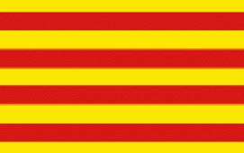

Amanda Sanjuan Sánchez
Informació personal
L'objectiu d'aquesta pàgina web és mostrar els meus acompliments personals i projectes en els que he estat treballant, i informació personal que m'agradaria compartir.
Informació bàsica sobre mi:
- Vaig nèixer a Catalunya l'any 2001.
-
Actualment estic estudiant
Matemàtiques i Enginyeria Industrial a la UPC (Barcelona).
- El meu esport és l'handbol.
-
M'agrada programar i ara mateix estic intentant millorar les meves habilitats amb la programació per potser en un futur proper poder treballar en aquest àmbit.
Projectes personals i altres coses que he anat fent
En aquesta secció us ensenyaré què he estat fent fins ara en els mons de la programació, del modelatge 3D i altres camps.
- Aquesta pàgina web sencera
Ara mateix estàs navegant per la meva pàgina web personal, que he fet jo totalment, aprenent alhora per el meu compte html i css.
- Web d'ajuda amb Materials.
Aquest link porta a una pàgina web que he creat partint d'una plantilla gratuïta d'internet que em va agradar. La he modificat per tal de transformar-la en una l'objectiu de la qual és ajudar a aquell que ho necessiti amb l'assignatura de segon curs de l'ETSEIB "Materials" i ha afegit links a pàgines que he fet jo enterament que porten a activitats amb contingut de l'assignatura.
-
Vídeo d'una muntanya russa futurista..
Aquest és un vídeo que vaig fer and el programa de modelatge 3D "Cinema 4D" seguint aquest
tutorial de youtube
que em va ajudar a aprendre més sobre el Cinema 4D. També vaig donar un curs d'introducció al modelatge 3D a nens d'entre 8 i 13 anys amb aquest programa i els vaig guiar per a aconseguir que ells mateixos també construíssin aquesta "muntanya russa futurista". Vaig impartir aquest curs amb l'empresa "CodeLearn".
- Llista de figures fetes amb SolidWorks.
Aquí he fet un llistat amb totes les figures que vaig modelar amb el SolidWorks quan vaig estar cursant l'assignatura "Expressió Gràfica" d'Industrials a l'ETSEIB. Vaig modelar-les a partir dels plànols que ens van donar per a completar aquests exercicis.
-
Treball de Recerca de Batxillerat.
Aquest és el treball de recerca que vaig fer per al Batxillerat. Tracta sobre l'anivellament de terres mitjançant mètodes numèrics.
Vaig guanyar un premi local de la meva ciutat (2n premi per a ser exactes) i el premi de Recerca Jove de l'Agur.